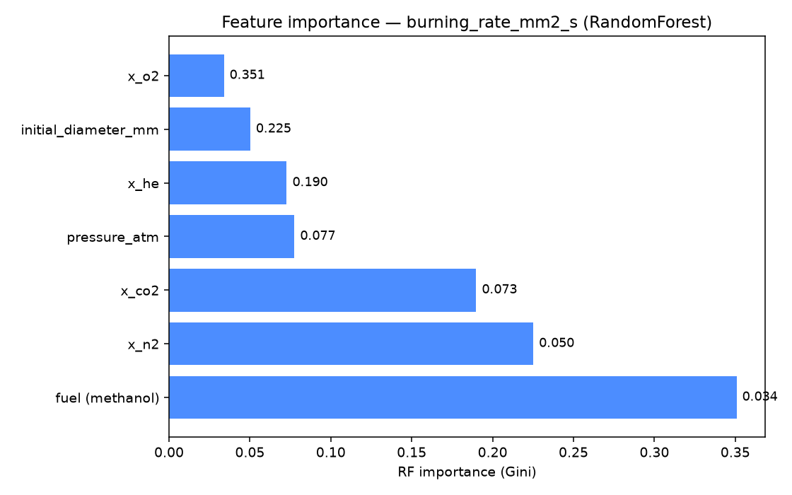
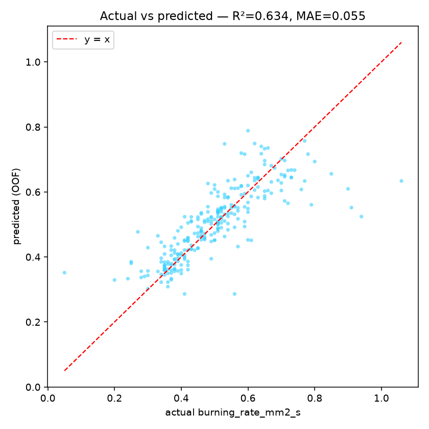
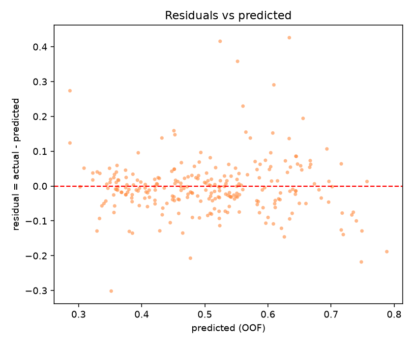

What this site is — in 30 seconds المقدمة
The scientific question
كيف تتغيّر طريقة احتراق قطرة وقود واحدة وانطفاؤها في الجاذبية الصغرى عند تغيّر البيئة (كسر الأكسجين، الضغط، غاز التخفيف، نوع الوقود)؟ هذه هي بيانات تجربة FLEX التي أجراها NASA على ISS.
What this site does
يعرض 274 سجلًا من الجدول الرسمي لـ PSI-69 مع فلاتر ورسوم ومقارنة بين مجموعات الظروف، ويقيس نماذج تعلّم آلي داخل هذه البيانات وحدها، ويشرح مصدر البيانات ومنهجية التقييم.
What it cannot conclude
لا يتنبّأ بحريق داخل مركبة فضائية، ولا يعطي توصيات هندسية، ولا يمنع أي حريق، ولا يصف كل صف بأنه تجربة أُجريت في الفضاء (الجدول لا يحوي عمودًا يحدّد ذلك — راجع «مصدر البيانات والمنهجية»).
data/flex_clean.csv…Filters narrow the 274 records
missing_pressure) and is excluded by the pressure filter
At a glance recomputed from the current selection
d² vs burn time one segment per test
d₀ وزمن احتراق
وقطر نهاية مُقاس — السجلات التي extinction_diameter_mm = 0 تعني «لم يُقاس» فتُستبعد.
Burning-rate constant k vs oxygen mm²/s vs mole fraction
يحلّ محلّ الرسم القديم الذي رتّب الاختبارات على محور «رقم الاختبار» — رقم الاختبار تسلسل تسجيل وليس متغيرًا علميًا، فلا معنى لترتيبه.
Flame extinction diameter vs oxygen mm vs mole fraction
> 0؛ القيمة 0 في الملف تعني «لم يُقس» وليست قيمة فيزيائية.
النقاط الأعلى = اللهب احتاج قطرة أكبر ليطفو عند نفس تركيز الأكسجين.
How tests end counts in the selection
Extinction = انطفاء عند قطر محدود، Disruption = انطفاء اضطرابي،
Completion = احتراق حتى الاستهلاك الكامل. هذه الفئات هي هدف نموذج التصنيف أدناه.
Compare & rank conditions رتّب المجموعات حسب وسيط k أو غيره
| Group | n | median k | Q1–Q3 | % Extinction | median O₂ |
|---|
Experiments
كل السجلات معروضة كما هي من المصدر (لا يُحذف أي صف). الصفوف ذات شريط أصفر يسارًا بها قيمة ناقصة — التفصيل في «مصدر البيانات والمنهجية».
What the current selection says رؤى تتغيّر مع الفلاتر
ملاحظة من البيانات محسوبة الآن من السجلات المعروضة فقط تفسير محتمل قراءة مرتبطة بمصدر موثّق — ليست توصية هندسية ولا تنبؤًا بحريق
Ask the data إجابات محسوبة من السجلات فقط — بلا استدعاء لأي خدمة خارجية
المساعد أدناه ليس نموذجًا لغويًا: كل إجابة تُحسب لحظيًا من data/flex_clean.csv داخل الفلاتر
الحالية، ويُذكر عدد السجلات المستند إليها. ما لا تدعمه البيانات يُجاب بأنه لا تكفي — دون اختلاق أرقام أو مراجع.
Machine Learning results —
Regression — burning_rate_mm2_s
| Model | MAE | RMSE | R² |
|---|
Classification — test_end
| Model | Bal. acc | Macro-F1 |
|---|
Per-class recall (out-of-fold) من مصفوفة الالتباس
| Class | Precision | Recall | F1 | n |
|---|
Feature importance — burning rate —
| # | Feature | Gini | Permutation (ΔMAE) |
|---|



Data source & methodology مصدر البيانات والمنهجية
المصدر
NASA Physical Sciences Informatics (PSI) — تحقيق PSI-69 · FLEX · Version 5.
DOI 10.60555/mbq8-0451 ·
الترخيص CC0-1.0 ·
صفحة التحقيق ↗
رابط التنزيل المباشر (GEODE) موثّق في data/provenance.csv مع تاريخ الوصول والـsha256.
الملف المستخدم
data/flex_clean.csv — نسخة مُعاد تنسيقها من التصدير الرسمي (cp1252 → UTF-8)،
274 صفًا × 16 عمودًا، بلا حذف أي صف.
sha256 للملف الخام flex_data.csv:
37c88ce8ae9391b7544ff630a45ce87543d04d317cdbfbed104fe7d5c27e1b96
sha256 للملف المستخدم flex_clean.csv:
16f300da016b0d06c6e4a579008b1307799663ec7192cdd1f352d15818d431e2
تاريخ الوصول: 2026-10-14.
فضاء أم أرض؟ — قراءة دقيقة
وصف تحقيق PSI-69 يصفه بـ«تحقيق في الجاذبية الصغرى» على ISS، لكنه ينصّ صراحةً على استخدام «بيانات قائمة في الفضاء واختبارات أرضية واسعة النطاق». الجدول لا يحوي عمودًا يحدّد أي صف كان على متن المركبة. لذلك لا نصف أي سجل بأنه تجربة فضائية هنا.
الحقول والوحدات والقيم الناقصة محسوبة مباشرة من الملف
| العمود | المعنى | الوحدة | فارغ |
|---|
التنظيف والاستبعادات
- لا يُحذف أي صف: الـ274 سجلًا كلها موجودة في الملف وفي الجدول.
- الضغط:
pressure_atm = mmHg / 760(تحويل وحدة فقط). اختبار 114 قيمته 0 (ضغط غير مُسجَّل في المصدر) → يُستبعد من فلتر الضغط ومن مجموعات الضغط. - القيم الفارغة: شَرطة طويلة
–في الملف الخام = مفقود → حقل فارغ، والقراءة يجب أن تكون بترميزcp1252لا UTF-8. extinction_diameter_mm = 0تعني «لم يُقس» (8 سجلات) — تُعامل كمفقودة في الرسوم.- زمن احتراق تقريبي: الاختباران 223 و224 مُقيَّمان في المصدر بـ
~6و~9ثانية → حُفظا كـ 6 و9 (لا دقة أعلى). - الوحدات: رأس PSI يكتب
Burning rate; mmلكن الوحدة الفعلية mm²/s (ثابت معدّل الاحتراق k) — موثّقة في NASA/TP-2015-216046.
ما الذي يدخل التقييم وما الذي لا يدخل
- المتغيّرات المتوقّعة (targets):
burning_rate_mm2_s(انحدار) وtest_end(تصنيف). - المتغيّرات المستخدمة (features):
pressure_atm, x_o2, x_n2, x_co2, x_he, initial_diameter_mm+ ترميز واحد لـfuel. كلها شروط معروفة قبل بدء الاختبار. - مستبعد بكامله من الميزات:
test_id(رقم الاختبار — ليس متغيّرًا علميًا)،flex_id، التاريخ والوقت،quality_flag،burn_time_sوextinction_diameter_mm(تُقاس بعد الاختبار → تسريب محتمل، وextinction_diameter_mmنفسه هدف ثانٍ). - التقسيم:
GroupKFold(5)علىcampaign_idالمشتقّ من بادئةflex_id— لا تُقسم سجلات الحملة نفسها بين التدريب والاختبار (لا تقسيم عشوائي على مستوى الصف).
القاعدة: إن وُجدCALتُؤخذ البادئة حتىCAL، وإلا تُزال النهاية المكوّنة من[HMRF]متبوعة بالأرقام. النتيجة: 78 مجموعة لانحدار و81 مجموعة لتصنيف. - البذرة:
random_state = 42في كل النماذج وإعادة التوزيع. - الخطوط الأساس: انحدار = متوسط k لكل وقود؛ تصنيف = الفئة الأكثر تكرارًا (Extinction).
- المعايير: MAE و RMSE و R² للانحدار · balanced accuracy و macro-F1 للتصنيف (لأن الفئات غير متوازنة: 186/61/27).
- القيم الناقصة داخل التقييم: 16 سجلًا بلا k تُستبعد من الانحدار (258 من 274)، وimputation بالوسيط يُدرَّب على فold التدريب فقط.
الاستشهاد
البيانات: NASA Physical Sciences Informatics (PSI). PSI-69 — Flame Extinguishment Experiment
(FLEX), Version 5 [Data set]. https://doi.org/10.60555/mbq8-0451 (CC0-1.0).
المرجع العلمي: NASA/TP-2015-216046 — Flame Extinguishment Experiment (FLEX),
NTRS ↗.
روابط المصدر وحالة التحقّق الكاملة: FLEX_Data_Source_Report.md ·
قاموس الأعمدة: data_dictionary.md · تقارير النماذج:
regression ·
classification.